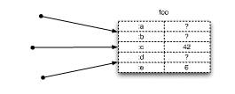
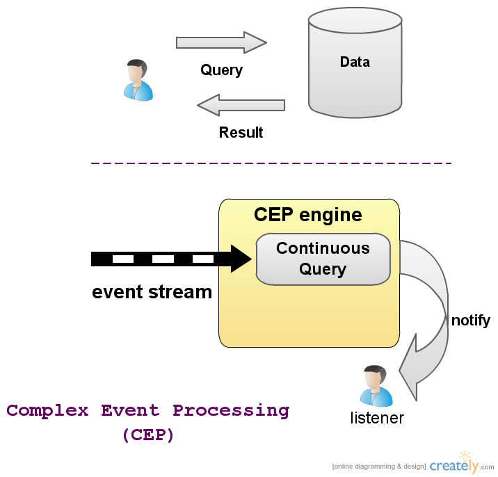

DDDD*
with Clojure and Complex Event Processing
*featuring Command / Query Responsability Segregation and Event Sourcing
pedro@intelie.com.br
@pedroteixeira
presented at QConSP 12/09/2010
Seek simplicity, and distrust it.
Alfred North Whitehead
bigger problems
more data
more cores
incidental complexity both in languages and in system architecture
becomes evident waste that we can not bear
a lot of incidental complexity disguised as 'simplicity' or superficial stuff
for too many programmers, surface syntax
quote: não é tão importante aprender rápido uma linguagem ou tecnologia, mas que seja simples depois de aprender.
Every generation needs a new revolution.
Thomas Jefferson
devemos nos questions se já resolvemos tudo

(-> clojure
event sourcing
cep
cqrs)
outras pessoas: udi dahan
vem liderando transformação
the illusion of motion
example

series of still frames

There is no such thing such as mutable object.
Alfred North Whitehead
values are critical to perception and decision making
users are used to it, all world is.
data of 10 minutes ago does not change
can't stop the "race"
much easier to treat as values, it's nice
do not have to handle things while time proceed!
we need and want these kind of model
where we can have our logic
without things changing beneth you
things happen at the same time, now.
things don't change in place
if time is a dimension
future is a function of the past
"no man can cross the same rive twice"
river is all in the mind.
time as illusion.
mesmo que seja confortável, e que pareça ser sim, não representa a realidade.
there is no changing values.
a value doesn't change
human mental model super-posição para criar objetos
mas objetos não mudam.
causalidade.
OO
"setMonth is a crazy concept"
classes and settable as default has destroyed our brains
we want multiple timelines
we have multiple users
we need to deal with it
-- can't afford to assume we can control the world (by locking), or we alone in the world (ignore it)
we need to deal with async
time as relative an discrete
quantum and relativitity
- Need immutability to manage state and time
- Actions and perceptions are distinct things
- One does not stop the world
não é possível tomar ação sobre snapshot
relacionar com Pirsig dynamic x static?
- Need to separate the concept of values and change
- Accept we reason over past data: we can't freeze the world
Need immutability to manage State and Time. the only sound way.
variables need to ref to values.
separate concept of values and change
por isso que, mutable object não faz sentido.
Dada essa restrição.
cqrs + event sourcing.
mas sem linguagem apropriada, solução ainda é melhor, pois filosofia da linguagem combina.
for local process:
clojure, rich hickey.
mas não resolve para sistemas distribuídos.
e cep to the rescue.
processamentos de eventos nessa arquitetura é essencial
especialmente para implementar processos de negócio
=> disclamer sobre pq não erlang?
- nem sempre queremos serializar
- queremos compartilhar estado, ás vezes, entre vários cores por ex. nada de errado com isso.
- queremos ter flexibilidade de uma solução com componentes possivelmente heterogenos.
locking requires superpowers
não vai ser mais possível, congelar o mundo ou assumir que pode ser feito.
muitos cores, muitos usuários
Progress is possible only if we train ourselves to think about programs without thinking of them as pieces of executable code.
Edsger Dijkstra
se interessado em modelar problemas do mundo real
deve ser amparado sobre um filosofia coerente sobre realidade
falar que bons princípios de OO não são encontrados em nenhum das linguagems modernas: java, c#, c++, ruby.
imperative programming and mutating objects need to be avoided!
todos todos os bons princípios de OO permanecem, mesmo com essas restrições:
polymorfismo, encapsulamento, modularização e re-uso
Though OOP came from many
motivations, two were central.
... [T]he small scale one was to
find a more flexible version
of assignment, and then to
try to eliminate it altogether.
a better module scheme for
complex systems involving
hiding of details
traditional OO makes think of composites as something other than values
".. you're doomed" -- rich hickey
major problem:
conflated symbolic reference (identity) with actual entities.
"the idea of the thing is that thing"
traditional variables are not suitable
pq não modelam tempo e nem coordenam mudança
- lock with mutex
object systems are very simplistic models of the real world
no notion of time
presume a shared timeline
- hidden contracts with C++: memory management, impede library usage
- hidden contracts with OO (Java, C#, Ruby, etc...) : time / state management
não é um problema de concorrência!
não sabemos quando tempos um valor estável, no idea who is affected.
higher-order functions is not all that we need
immutability is even more important
for sanity preserving
clojure é unica linguagem funcional pragmática onde todos os objetos são imutáveis
- state managed right
- functional
- lisp
- hosted JVM / CLR
also relevant:
-
motivate you to write side-effect free functions, and use immutable structures for defualt
but allow you to go outiside on your own, if you want.
- Change is just a function takes on value and returns another. Old is fine.
- uniform state transition model
- STM with MVCC
uniform syntax
declarations, controls, function calls, operators all just list with op in the front.
| Java / C# |
Clojure |
int i = 5; |
(def i 5)
|
if(x == 0)
return y;
else
return z; |
(if (zero? x) y z) |
x * y * z; |
(* x y z)
|
foo(x, y, z); |
(foo x y z)
|
efficient Persistent Data Structures
immutable, cheap modified copies, structural sharing
| type |
example |
| list |
(1 2 3)
|
| vector |
[1 2 3]
|
| map |
{:key "value"}
|
| set |
#{:a :b}
|
Functional programming
first-order, higher-order, atemporal
> (reduce + (map count ["o" "oo"]))
3
(defn palindrome? [s]
(or (<= (count s) 1)
(and (= (first s) (last s))
(palindrome? (rest (butlast s))))))
> (palindrome? "noon")
true
melhor unidade não é objeto ou classe, mas funções.
especialmente, pure functions.
contraste com imperativo
lazy!
easy to understand, change, test, compose.
shorted coded.
they should be the bricks.
pure functions:
depend only of arguments
have no notion of time
a ton of benefits!
independent, de concorrência
mais modular, mais fácil de testar, mais de fácil de entender
melhora drasticamente a vida de um desenvolvedor
torna muitas coisas fáceis!
simples, expressiva e elegante
typical OO (Identity + State conflated)

ref is an indirection
atomic change
Software Transaction Management
(def room-light (ref {:on true}))
(def door-light (ref {:on false}))
(dosync
(alter room-light assoc :on false)
(alter door-light assoc :on true))
(System/currentTimeMillis)
(def stop-words #{"the"})
(take 10 (remove stop-words
(.split #"\s+"
(slurp "words.txt"))))
(doto (new java.util.HashMap)
(.put "a" 1) (.put "b" 2))
modelos só fazem sentido em contextos
aggregate root é a unidade de distribuição, de integridade.
transação, etc.
parte do domínio, só precisamos de 1 query: buscar AR
Domain model powered by Clojure

- Functions map to domain behaviours
- defrecord for entities
- Polymorphism with multimethods and protocols
- Namespaces for modularization
- Encapsulation with closures (and private)
- DSLs are mundane
- Easier to test, reason, reuse
- Not sufficient to solve one dimensions of software design
- Need a distributed system architecture for most applications
imagem unindo clojure + cqrs
unir lutas, visão holística
duas escalas da solução: arquitetura do sistema e linguagem para programa
bons princípios devem habitar todas escalas da solução
clojure for the domain logic
circular arquitecture for distributed system
Event Sourcing
to the rescue
- Event immutable record that captures a state transition
- associated with an aggregate root
- current state derived by replaying events
event streams !
Any model can be created from the original behaviours that occured
capturamos intenções originais
permite qualquer tipo de analytics
para qualquer cenário
event is a value that captures a state transition
recover state by reading events and applying to AR in domain
mature business models use some of these concepts:
accounting, banks: saldo é derivado, não pode apagar.
como concertamos um erro:
outro evento que corrige
mais informação,
imenso valor para negócio
o valor de saber tudo que acontece não tem preço
se guardar apenas uma visão estruturada do último estado
muitas vezes requisitos aparecem depois, e é necessário muito esforço para implementar por caso de uso.
não custa ter isso como default
- Everything that happened is stored
- Event store is write-once
(with-event-sourcing
(publish-for (aggregate-root "cart")
:ItemAdded {:id 123
:quantity 1}))
replay of events para recupar stado atual
aplicamos resultado dos comandos, não os comando em si.
Tremendous business value
Event Store
can be as simple as...
- Just serialize it!
- json
- xml
- protobuf, etc...
{
name : "ItemAdded",
id : 123, quantity : 1
}
(defn add-item [cart id]
(update-in cart [:items] conj id))
(defn event-handler [cart added-evt]
(add-item cart (:id added-evt))
;test example
(describe "handler for Item Added Event"
(given "an empty cart" [cart {}]
(it "should return cart with added item"
(= (event-handler cart {:id 1}) {:items [1]}))))
more emphasis on verbs, behaviours than nouns (types)
eric evans quote:
event sourcing is the bridge for building real-life programs.
allows functional program to emit events, that compose the entire system.

queries são contínuas
fluxo de dados
baixa latência
processar eventos para handlers
implementar sagas em domain
Clojure
(.initialize (EPServiceProviderManager/getDefaultProvider))
JRuby
service = EPServiceProviderManager.getDefaultProvider
service.initialize
- embedded
- low-latency
- extensible
EsperEvent representation
An event is an immutable record of a past occurrence of state change
(.sendEvent
(.getEPRuntime (service))
{"id" 123
"quantity" 1} "ItemAdded")
event has an event type, which can derive from supertypes
;clojure record impl. java.util.Map
(defrecord DomainEvent [])
eventos são tipos
map event types tem relação de super types.
[Event Type]<>-supertypes0..*>[Event Type]
[Event Type]-defines-[Event]
EsperEvent Processing Language (EPL)
select * from OrderCreated
on OrderEvent
insert into LargeOrders
select * where orderQty >= 100
insert into SmallOrders select *
select * from MarketData
where price > (select max(price) from
MarketData(symbol='GOOG').std:lastevent())
select * from pattern
[every a=Checkin ->
(OutOfOrder(term.id=a.term.id) and not
(Cancelled(term.id=a.term.id) or
Completed(term.id=a.term.id)))]
select 'terminal 1 is offline' from pattern
[every timer:interval(60 sec)
-> (timer:interval(65 sec)
and not Status(term.id = 'T1'))]
output first every 5 minutes
- Sagas long-running business processes
- filtering and aggregating for event listeners
Common
layered
architecture

All businesses can be treated the same from the perspective of software. ??
pq a mesma arquitetura é usada em todos os domínio?
apontar ORM, DTOs, Remote Façade
mudança formulário papel para dado
mais de um usuário, muda tudo, porém ficaram modelos antigos.
Sometimes the problem is to discover what the problem is.
Gordon Glegg [1969], The Design of Design
Problems
- User intentions not captured
- Perception and state changes are conflated
- Poor change management
- last one wins is unacceptable
- Not fit for multi-user applications
- Too much accidental complexity
principles, got mixed up with architecture template.
besides, all scalability issues
common distributed architecture is not suitable
data driven
pq não modelam tempo, e não capturam as inteções de mundança e
são incapazes de coordenar mudança
- optimistic locking in db
it's also impossible to do domain driven design over this:
- transacional script over objects
- no behaviour, only data (edit data only)
BD is used to lock, how to scale? buy more DBs.
- usado para tudo, código igual, mesma arquitetura para qualquer sistema,
- abstração cara para BD, normalmente.
tendência a gerar meta-sistemas
vendors recomendam? microsoft and oracle?
- lost all verbs
- lost of user intentions
(need to reverse enginnering to figure it out)
editing an entity makes no sense to the business
(ex: corrigir endereço ou mudar endereço)
aberração.
desenvolvedores são caros, não há desculpa para desperdícios desse tipo.
- Transactional script over object model
- Not even anemic domain model
- Only nouns
- Where are the verbs in your domain?
- CRUD makes no business sense
- Anti-Patterns
- setters in your domain model
- getters in your domain model
exclusivo.
editing an entity makes no sense to the business
(ex: corrigir endereço ou mudar endereço)
mais do que simples mismatch: pq tentamos colocar entidade atrás de tudo? e dizer que está modelando o negócio?
ex: twitter
lista há 10 minutos atrás
Command and Query Responsibility Segregation (CQRS)
não é novo.. oltp x analytics,
bertrand meyer, etc.
realização que precisamos tomar decisões difernetes para necessidades diferentes.
conceito simples:
foco em separação de modelo
separar em duas partes:
com diferença de responsabilidade
- a nivel de serviço
usar o mesmo modelo é sub-optiomal para esse dois casos
se for pelo menos caminho, não é possivel..
possuem necessidades diferentes
deve ser considerado um anti-pattern usar o mesmo para esse dois casos
- Captures the user intented action
- Request to change state
- Promotes handling concurrency according to use case
- Benefits of async programming
- Freedom for better domain solutions
- Motivates better user experience
princípio conhecido
comandos capturam intenção do usuário
em princípio, não retornam valor
benefits of async programming
"me avise, quando tiver solução"
não é necessário expor dados do modelo domínio, nem é necessário conter todos os dados
que são usados para exibição
o modelo deve ser write-only
nova liberdade, permite resolver melhor problemas do domínio
role of Domain Models?
only maintain what you need.
do not need anymore to store everything in it anymore
Users Do Things
save user x register user
- Keep it simple
- Use the most efficient way for data retrieval
- No impedance mismatch
- no impedeance, no orm, domain model não processa queries
- just data, use whatever is more efficient
deve ser muito simples, e barato de ser feito
= se não, pessoas precisam ser especialistas no domain, no data model, e no ORM.
= muita bagagem para tarefas simples.
queremos que seja direto para UI
nada de errado em utilizar SQL, ou simples wrapper
node4j, mongodb, couchdb
attempting to tune orm is needless, expensive
prefetch-paths are code smells, expensive
talvez menos tempo ou menos, mas mais barato e mais eficiente.
extra layers of cache é complexidade acidental..
Brewer's CAP theorem
can pick only 2
Distributed Domain Driven Design
CQRS + Event Sourcing
- System integration is built-in
- Easy to parallelize development
- reminiscient of MVC, but with two models
podem evoluir separadamente
contratos são explícitos
facilita desenvelvimento
podemos escalar leitura, dois caminhos, mais escolhas
comandos no impertativo
eventos no passado
same good principles are maintained
but layers != tiers
most important thing users/customers do:
queries
commands
have nothing to do with entities.
model only with entities seem deficient.
Tremendous business value
Circular architecture
related to Cockburn's hexagonal architecture
add clojure in domain
and esper in domain and in handlers
Doing the right thing is more important than doing the thing right.
Peter Drucker
pensamento lean: value + success, business is king.
vc está sendo responsável? usando melhoras ferramentas?
talvez seja hora de atualizar seu toolbox
não adianta usar a definição de "certo" de uma caixa que possui muitos defeitos
Simplicity is the ultimate sophistication.
Leonardo da Vinci
references
incomplete list